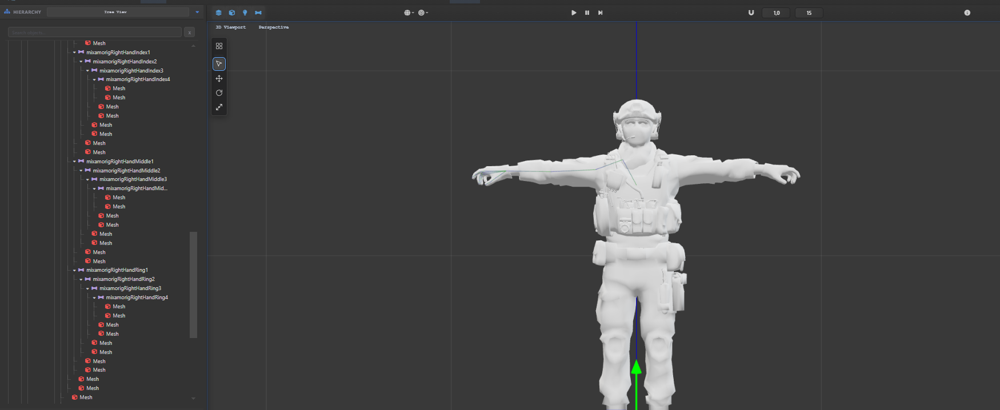
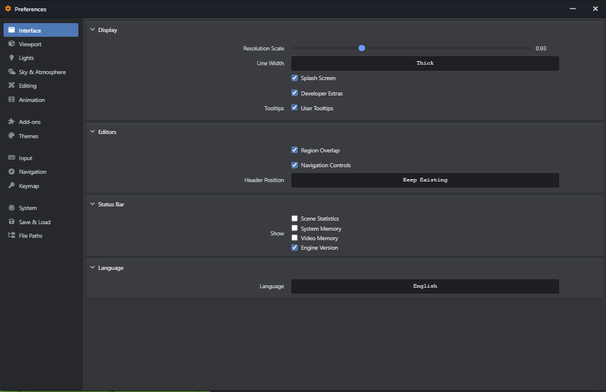

Outliner & Engine Settings
The Outliner and Settings panels provide foundational control over scene organization and engine-wide
configuration parameters. This document explores the HierarchyPanel.js implementation
of the Outliner and the comprehensive configuration options available via
settingsPanel.js.
Outliner Scene Hierarchy

The Outliner serves as the structural backbone of your scene, presenting a hierarchical tree-view display of all instantiated entities including static meshes, skeletal armatures, cameras, lights, and organizational collections.
Core Features
- Tree-View Display: Clearly visualizes parent-child relationships. Child transforms act in local space relative to their parent node.
- Drag-and-Drop Parenting: Intuitively reparent objects by dragging a node onto
another. Hold
Shiftwhile dropping to preserve global transform data during reparenting operations. - Advanced Search & Filtering: Rapidly locate assets via the search bar. Supports
regex and type-filtering (e.g., typing
t:lightfilters the view to display only light entities).
State Toggles
Each node in the outliner exposes several rapid-access state toggles:
| Icon Indicator | Function | Description |
|---|---|---|
| Eye Icon | Viewport Visibility | Toggles the object's visibility in the current 3D viewport. Does not affect final rendering. |
| Padlock Icon | Selection Lock | Prevents the object from being accidentally selected or modified in the viewport. Ideal for background geometry. |
| Render Icon (Camera) | Render Toggle | Dictates whether the object is evaluated during the final rendering or compilation pipeline. |
Engine Settings & Preferences

The Engine Settings panel (Shortcut: Ctrl + ,) offers exhaustive customization over
performance scaling, interface behavior, and global rendering properties.
Graphics & Performance
Configure hardware utilization and fidelity parameters.
| Parameter | Values | Impact |
|---|---|---|
| Max FPS | 30, 60, 120, Uncapped | Limits application tick rate. Uncapped is recommended for profiling. |
| Shadow Map Res | 512 to 4096 | Dictates the sharpness of dynamic shadows. Highly impactful on VRAM. |
| Anti-Aliasing | None, FXAA, SMAA, TAA | Method for reducing jagged edges. TAA provides the best temporal stability but requires motion vector calculation. |
| Ambient Occlusion | Off, SSAO, GTAO | Simulates localized shadowing in crevices. GTAO provides physically accurate occlusion. |
Keymap & Shortcuts
SM Engine features a fully customizable input abstraction layer. Users can rebind viewport navigation (Maya vs Blender vs Unreal presets), modeling hotkeys, and custom tool macros.
// Example: Programmatically overriding a shortcut
engine.input.bindAction('Modeling.Extrude', {
key: 'E',
modifiers: ['Ctrl'],
event: 'pressed',
context: 'VIEWPORT_3D'
});
Color Management
Ensure color accuracy across workflows via the global color management pipeline.
- Color Space: Defines the working space of the engine. Supports standard sRGB for basic projects, Linear for compositing, and ACEScg for industry-standard HDR cinematic pipelines.
- Exposure & Gamma: Global scene luminosity adjustments.
- Look Presets: Applies tone-mapping curves. Options include Filmic, AgX (highly recommended for natural highlight roll-off), and High Contrast styles.
UI Themes
The editor environment supports extensive visual customization.
- Presets: Default Dark Mode, Light Mode, and OLED Black.
- Custom HSL Themes: Users can define custom base colors, accent colors, and text contrast ratios which the engine will procedurally generate a theme from.
Certain settings, specifically changes to the fundamental Color Space (e.g., swapping from sRGB to ACEScg) and Shadow Map allocations, require restarting the SM Engine runtime to recompile shaders.